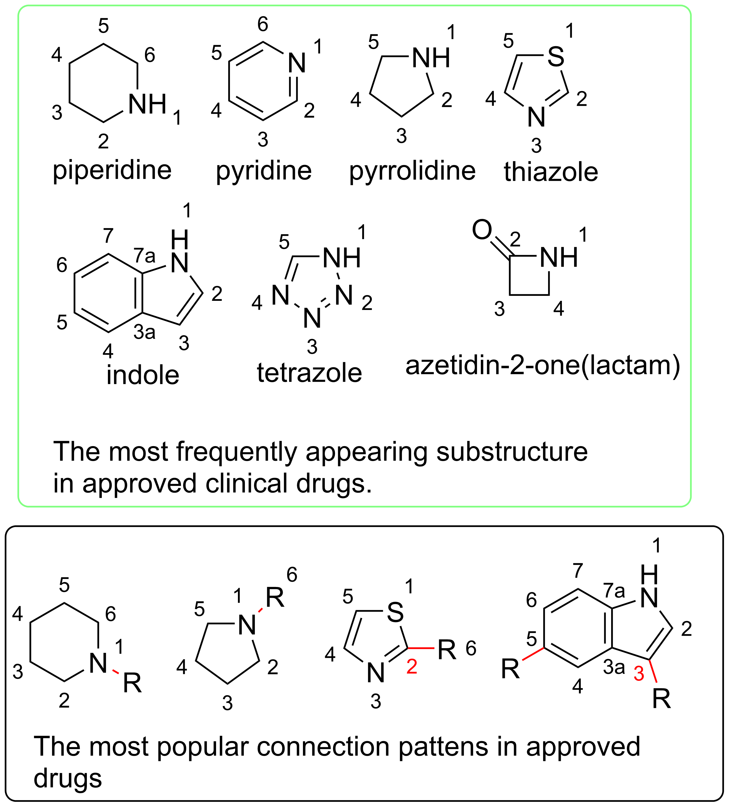
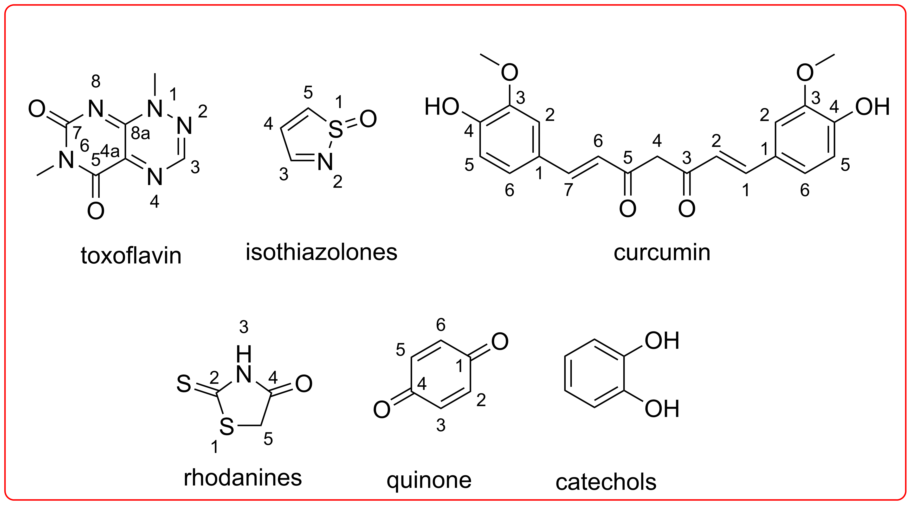

Nowadays it is very popular that, starting from computer-aided drug design, or virtual screening that one can easily get a lot of "hit" compounds towards a certain target of interest. For example, the current SARS-COV-2 related protein targets. However, for those chemists who just stepped into or try to step into this zone, it is always good to be reminded that even you already defined rules like "rule of five" in the screening procedure, there are a class of infamous compounds called "Pan-assay Interference Compounds" or "PAINS" compounds, which has been found would be "positive" in many in vitro assays, but they are non-selective, binding to a lot of protein targets. You want to remove these compounds at an early stage of the drug development, before wasting a lot of time and resources on this "false positive" hit.
But let first have a look at the good ones, based on a paper published in 2014, CHEMICAL NEWS The Most Common Heterocycles in Drugs, published in Science, by Derek Lowe, the top heterocycles appeared in FDA approved drugs are list as the next image, from left to right, up to bottom.
Now time for bad molecules, there are a lot, only several common ones listed as the next
If you want to know if a certain compound of your interest is a PAINS compound, you could try https://www.cbligand.org/, but please be advised that the algorithm for filtering out PAINS in an ongoing program, there might be better web or software to do the similar thing. And always remember, the result is just a suggestion, you need to make your decision to accept the result or not, after all, if you put some FDA drug, some algorithms give you a PAIN as well. "A small proportion (ca. 5%) of FDA-approved drugs contain PAINS-recognized substructures, these comprising both natural products and synthetic drugs"—— ACS Chem Biol. 2018 Jan 19; 13(1): 36–44.
Several excellent articles can be read if you would more about PAINS, one is as above, the other is a blog from Derek Lowe again. https://blogs.sciencemag.org/pipeline/archives/2010/02/08/polluting_the_literature_with_pains And the related article the blog has referred to, https://pubs.acs.org/doi/abs/10.1021/jm901137j
To go places and do things that have never been done before – that’s what living is all about.